Virtual Machine with DonkeyCar/DonkeySim AI Simulator
VMware Player Installation
Virtual machines (VMs) are essentially computers running on computers — you can simulate a different operating system than the one native to your computer.
Prerequisites
- Download the VMware Player installer depending on your OS; check this document for information for additional information if necessary
- Windows
-
Download the Ubuntu VM image — make sure you have enough space on your disk (~40 GB zipped, ~50 GB unzipped)
-
https://drive.google.com/file/d/1aGVPzoEPYW0GxUnVGjzkiNsqqJFgZ7hb/view?usp=sharing
-
Minimum 8 GB system RAM on host machine
- If your system only has 8 GB of RAM, set the ammount of memory allocated to 5120 MB (5 GB)
- If your system has at least 16 GB of RAM, enter the VM settings for the image and increase the RAM alloted to 8 GB; the VM must not be running to do so
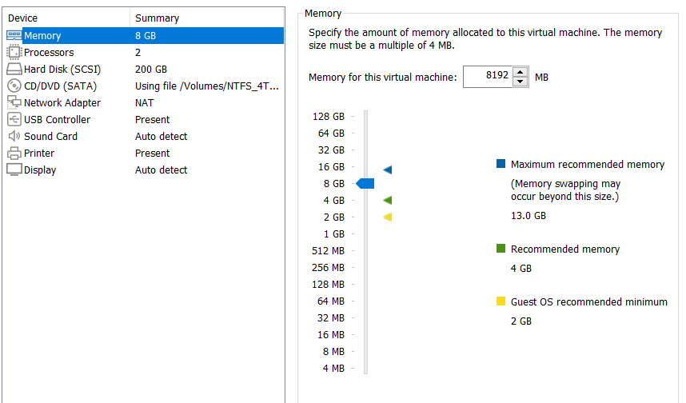
VMware setup
When you install the VMware Player, you will be prompted on options for the install. As you go through the install wizard be sure that you:
- Accept the license agreement
- Install the WHP automatically
- Don't enable enhanced keyboard
- Set a custom file path for the Player (if you desire)
- Select whether or not you want to opt into the diagnostics agreement
- Select where you want you your shortcuts to be
- Then press
Install
Open VMware Player and select Open a Virtual Machine
You will be prompted to select an image to be added — select the image you downloaded with the .vmx
extension
It should now appear in the list on the left of the VMware Player window — single-click the image and select Edit Virtual Machine Settings
Here you can edit the memory settings and any other settings required to run the VM
If you experience an error with respect to Intel-VT or AMD-V, disable the virualization engine in the Processors tab
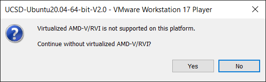
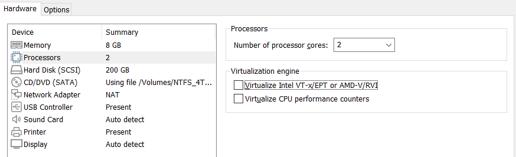
Initial Boot up of VM
If necessary, enable virtualization in your BIOS/UEFI. When you are ready, start the virtual machine.
- Login Credentials
- User: ucsd
- Password: UcsdStudent
Cutting and Pasting
- If cutting and pasting is not working from the host to the VM, open a terminal in the VM and run the following commands:
sudo apt-get autoremove open-vm-tools
sudo apt-get install open-vm-tools-desktop
sudo reboot now
Connecting Game Controller
Connecting a game controller is useful in order to control the car used in the simulations you will be running and other projects (these can include Playstation or Xbox controllers, or the Logitech controller likely included in your kit).
These should be connected using via a USB cable, Bluetooth, or a USB dongle.
When connecting a controller, the VM should ask if the input device will be connected to the host system or the virtual machine — connect it to the VM by selecting the name of the VM.
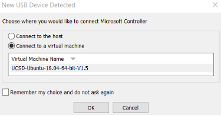
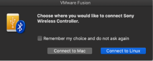
Verify Controller connection
The controller will be identified as js0 (or js# if there are multiple joysticks connected to the system)
Run the following command in a VM terminal:
ls /dev/input
If the controller is connected, it should appear as js0 in the terminal output.
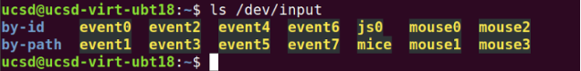
To test the joystick controls, run in a terminal:
sudo apt-get update
sudo apt-get install -y jstest-gtk
jstest /dev/input/js0
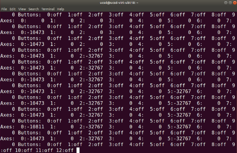
Then interact with the controller to see the values printed to the terminal change (analog inputs should change smoothly, while digital inputs like button presses change between on and off)
Custom Controller
If your controller is not behaving correctly, or you need to generate new controller mappings, you can generate custom controllers.
See https://docs.donkeycar.com/parts/controllers/ for controller support; custom mapping is linked at the bottom of the page.
To setup a new controller or modify input mappings, you can use the Joystick Wizard (described here: https://docs.donkeycar.com/utility/donkey/#joystick-wizard)
The joystick wizard creates a custom controller named "my_joystick.py" in the mycar folder. To enable it, in the myconfig.py file, set CONTROLLER_TYPE="custom"
To run the wizard, from a terminal in the PATH/TO/mycar directory, run
donkey createjs
To determine if the system can see the input device, jstest can be used. If it is not installed, run sudo apt install joystick
DonkeyCar AI Framework
This software allows you to train an AI model to run simulated or even physical vehicles using computer vision (either virtually or in reality).
Launching the Simulator
Using the file explorer in the VM, navigate to ~/projects/DonkeySimLinux/ and execute the file donkey_sim.x86_64
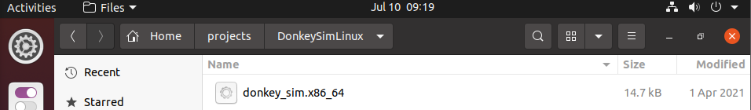
Track Names
Depending on the track to be raced on, you need to change the track to train on; those include:
- donkey-circuit-launch-track-v0
- donkey-warren-track-v0
- donkey-mountain-track-v0
Customizing Virtual Car
From a terminal, run atom myconfig.py from the ~/projects/d4_sim/ directory.
Within the myconfig.py file, change the:
- car_name
- racer_name
- your country location (under "country")
- a fun fact (under "bio")
- car color (in the dictionary entry for "body_rgb")

Example Config File
# 04Jan22
# UCSD mods to make easier for the UCSD students to use the Donkey-Sim
# the following uncommented lines where copied here from the body of myconfig.py below
DONKEY_GYM = True
# DONKEY_SIM_PATH = "remote"
DONKEY_SIM_PATH = "/home/ucsd/projects/DonkeySimLinux/donkey_sim.x86_64"
# DONKEY_GYM_ENV_NAME = "donkey-warren-track-v0"
DONKEY_GYM_ENV_NAME = “donkey-mountain-track-v0”
# UCSD yellow color in RGB = 255, 205, 0
# UCSD blue color in RGB = 0, 106, 150
GYM_CONF = { "body_style" : "car01", "body_rgb" : (255, 205, 0), "car_name" : "UCSD-148-YourName", "font_size" : 30} # body style(donkey|bare|car01) body rgb 0-255
GYM_CONF["racer_name"] = "UCSD-148-YourName"
GYM_CONF["country"] = "USA"
GYM_CONF["bio"] = "Something_about_you, ex: Made in Brazil"
#
# SIM_HOST = "donkey-sim.roboticist.dev"
SIM_ARTIFICIAL_LATENCY = 0
SIM_HOST = "127.0.0.1" # when racing on virtual-race-league use host "roboticists.dev"
# SIM_ARTIFICIAL_LATENCY = 30 # Use the value when you ping roboticists.dev. When racing on virtual-race league, use 0 (zero)
# When racing, to give the ai a boost, configure these values.
AI_LAUNCH_DURATION = 3 # the ai will output throttle for this many seconds
AI_LAUNCH_THROTTLE = 1 # the ai will output this throttle value
AI_LAUNCH_KEEP_ENABLED = True # when False ( default) you will need to hit the AI_LAUNCH_ENABLE_BUTTON for each use. This is safest. When this True, is active on each trip into "local" ai mode.
#
# When using a joystick modify these specially USE_JOYSTICK_AS_DEFAULT = True
# JOYSTICK
# USE_JOYSTICK_AS_DEFAULT = True #when starting the manage.py, when True, will not require a --js option to use the joystick
JOYSTICK_MAX_THROTTLE = 1.0 #this scalar is multiplied with the -1 to 1 throttle value to limit the maximum throttle. This can help if you drop the controller or just don't need the full speed available.
JOYSTICK_STEERING_SCALE = 0.8 #some people want a steering that is less sensitve. This scalar is multiplied with the steering -1 to 1. It can be negative to reverse dir.
AUTO_RECORD_ON_THROTTLE = True #if true, we will record whenever throttle is not zero. if false, you must manually toggle recording with some other trigger. Usually circle button on joystick.
JOYSTICK_DEADZONE = 0.2 # when non zero, this is the smallest throttle before recording triggered.
# #Scale the output of the throttle of the ai pilot for all model types.
AI_THROTTLE_MULT = 1.0 # this multiplier will scale every throttle value for all output from NN models
#
Get Latency from Remote Server
To get the latency between your computer and the server, ping it using the command
ping donkey-sim.roboticist.dev
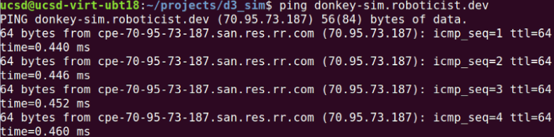
Since this computer is on the same network as the server, the delay is much lower than 0.5 ms. When pinging the server within the US, you should expect about 20-60 ms.
Replace the value of SIM_ARTIFICIAL_LATENCY with the average ping delay (e.g. SIM_ARTIFICIAL_LATENCY=30)
Collecting Data
The AI model works via behavioral cloning. In order to collect data for it, we need to drive the car in the virtual environment.
From a terminal, enter the donkey virtual environment with the command:
conda activate donkey
(donkey) should now appear at the beginning of the terminal prompt.
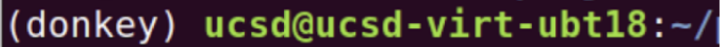
Enter the donkeycar directory
cd ~/projects/d4_sim
To drive the car in order to collect data, run
python manage.py drive
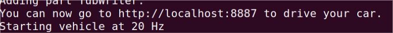
Open a web browser and go to http://localhost:8887
Driving using Mouse and Keyboard
From the web address above, you can control the car using a virtual joystick.
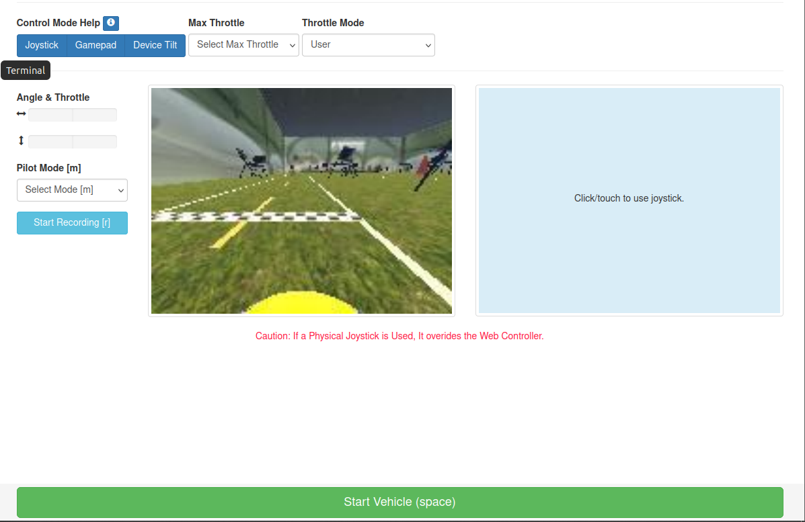
20 laps is recommended for an initial dataset.
To stop the DonkeyCar framework, use CTRL + C in the terminal
Driving using a Gamepad
To use a physical joystick without using the web browser, edit this section in myconfig.py.
# #JOYSTICK
# USE_JOYSTICK_AS_DEFAULT = False #when starting the manage.py, when True, will not require a --js option to use the joystick
# JOYSTICK_MAX_THROTTLE = 1 #this scalar is multiplied with the -1 to 1 throttle value to limit the maximum throttle. This can help if you drop the controller or just don't need the full speed available.
# JOYSTICK_STEERING_SCALE = 1 #some people want a steering that is less sensitve. This scalar is multiplied with the steering -1 to 1. It can be negative to reverse dir.
#AUTO_RECORD_ON_THROTTLE = True #if true, we will record whenever throttle is not zero. if false, you must manually toggle recording with some other trigger. Usually circle button on joystick.
# CONTROLLER_TYPE = 'ps4' #(ps3|ps4|xbox|pigpio_rc|nimbus|wiiu|F710|rc3|MM1|custom) custom will run the my_joystick.py controller written by the `donkey createjs` command
# USE_NETWORKED_JS = False #should we listen for remote joystick control over the network?
# NETWORK_JS_SERVER_IP = None #when listening for network joystick control, which ip is serving this information
# JOYSTICK_DEADZONE = 0.01 # when non zero, this is the smallest throttle before recording triggered.
Set USE_JOYSTICK_AS_DEFAULT to True and set the controller type CONTROLLER_TYPE to one from the adjacent list (ps3|ps4|...).
You may have to uncomment lines in order for them to take effect.
When using a controller, the face buttons can have useful functions:
- Deleting 100 data points (@20Hz == 5s)
- Emergency stop
- Change operations mode (User control, AI model)
Otherwise you may have to determine the function of each button from the terminal outputs when they are pressed.
20 laps is recommended for an initial dataset.
To stop the DonkeyCar framework, use CTRL + C in the terminal
Deleting Data not to be used in Training
Data for training is stored in the ~/projects/d4_sim/data directory.

We can delete data by removing the data folder and creating a new one.
Run this command in the d4_sim directory. Be careful — there is no undoing this if the command runs successfully.
rm -rf data
Then create a new data directory with:
mkdir data
Training and Testing
Using the data in the data folder, we can train a model and give it a name (e.g. 8july24_sim_160x120_20_1.h5)
20 laps is recommended for an initial dataset.
To do so, run this command from the d4_sim folder.
python train.py --model=models/YOUR_MODEL_NAME.h5 --type=linear --tubs=data/
To test the model, run:
python manage.py drive --model=models/YOUR_MODEL_NAME.h5 --type=linear
Enabling the model is done by pressing the change operation mode button twice. The terminal should state that the car is in AI mode.
If the car does not perform well around corners, it could be that throtte and steering data is not being recorded when navigating them.
By default, the program records steering only when a throttle input is detected — when slowing down to corner, this means steering data may not be recorded. To fix this, you can edit in myconfig.py:
AUTO_RECORD_ON_THROTTLE = True
Set this to false. Now, in order to record data, you must press the record button to begin input recording. The terminal will print out when recording is enabled and the amount of samples.
If you increase the number of samples recorded after training a model, you can train a new model that uses all of the data in the data folder (old and new — be sure to give it a different name).
To train data from a specific tub and transfer to a previous model:
python train.py --tub ~/projects/d4_sim/data/TUB_NAME --transfer=models/PREVIOUS_MODEL.h5 --model=models/NEW_MODEL.h5
Tubs are subsections of the data folder that you may create to separate training data. To use all the data in the data folder, do not include a tub name after ~/projects/d4_sim/data/ in the tub argument.
Upgrading to the latest Donkey-Sim and Donkey-Gym (if needed)
Common Issues
Slow FPS Locally
UCSD GPU Cluster Instructions
Do not use the cluster until you are told the GPU cluster is ready to use.
Do not train on the cluster until you have demonstrated model training on your local machine.
To train our models faster, we can use more powerful GPUs with higher throughputs.
On the virtual machine you will be using 2 terminals:
-
Local Session: Used to interact with the virtual machine
-
Remote Session: From this terminal you will ssh (secure shell) onto the GPU cluster using the proper account.
In the remote session terminal, ssh into the GPU cluster:
ssh <username>@dsmlp-login.ucsd.edu
You will be prompted for a password (case sensitive). No characters will be shown for security purposes.
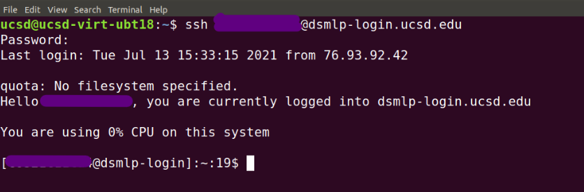
Your shell prompt is replaced with your user login for the GPU cluster.
You will have access to two containers — one with only a CPU, and another with the GPU. The GPU clusters are limited, so only use them for training.
Available hardware options:
Container for transfering data: (2 CPU 4 GB RAM)
launch-scipy-ml.sh -i ucsdets/donkeycar-notebook:latest
Container for training models: (8 CPU, 1 GPU, 16 GB RAM)
launch-scipy-ml.sh -g 1 -i ucsdets/donkeycar-notebook:latest
When creating the GPU container, the terminal should look like:

You should only have one container open at a time.
When launching a container it creates a "pod"; in order to exit the pod, run in the terminal:
exit
To confirm that you have exited the container and the instance has successfully been deleted do
kubectl get pods
This should return "no resources found".

If there is a pod, delete it with:
kubectl delete pod <POD_NAME>
Transfering Data
In the Remote Session, prepare DonkeyCar.
The donkey virtual environment should automatically be invoked for you; otherwise try
conda activate donkey
If donkey is not found, try
conda init
Relogin to the remote session and try the activate command again.
Once you are in the virtual environment,
mkdir ~/projects
cd ~/projects
donkey createcar --path d4_sim
cd d4_sim
In the Local Session
To copy over your myconfig.py file:
rsync -avr -e ssh myconfig.py <user_name>@dsmlp-login.ucsd.edu:projects/d4_sim/
To transfer data collected in the local session to the remote session:
rsync -avr -e ssh data/<tub_name> <user_name>@dsmlp-login.ucsd.edu:projects/d4_sim/data/
This sends specific tubs (e.g. tub_#_21-07-13 in this example) to the remote session.
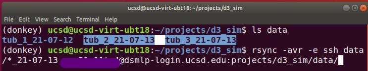
The tubs should now appear in the remote session.
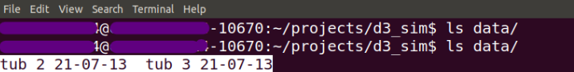
The rsync command syncs directories remotely from one system to another. That means it will only copy the differences between the two directories to save time and reduce load. Since the data does not exist initially on the remote system, the first use of rsync will copy the whole folder over to the remote system.
Once the data is transferred, close the CPU pod (and verify that it is closed) and open a GPU pod to train on the data.
Training on Data
Once the data is transferred to the remote session, training a model on it is the same as on a local session.
In the Remote Session
If you didn't use any tubs and just have your data in the data folder, this command should do the trick:
python train.py --model=models/yourmodelname.h5 --type=linear --tubs=data/
You can train multiple tubs at the same time with (the paths to the tubs must be separated by commas, no spaces).
python train.py --tub=data/tub1,data/tub2 --model=models/MODEL_NAME.h5 --type=linear
To alter a previous model with new data:
python train.py --tub=data/tub1 --model=models/NEW_MODEL_NAME.h5 --transfer=models/OLD_MODEL_NAME.h5
Note : If "imgaug" is not availible and Donkeysim generates an error, run
pip install imgaug
Once your model training has completed, close the GPU pod (verifying that it has closed) and open a CPU pod to transfer the data back to your local machine.
Transferring Data back to Local Session
This is done similarly using the rsync command, but the source and destination are flipped since the data is going from the remote session to the local session.
In the Local Session
rsync -avr -e ssh <user_name>@dsmlp-login.ucsd.edu:projects/d4_sim/models/<model_file> models/
Now you can test the car in the local session as before.
Using a Remote Server for the Simulator
The simulator for DonkeyCar (that you found in ~/projects/DonkeySimLinux/ and executed with the file donkey_sim.x86_64) can be run from a remote server instead of locally on your machine.
The server's name is donkey-sim.roboticist.dev
You can connect to the remote server by changing the simulator host in the myconfig.py file.
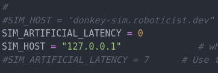
Set the SIM_HOST from the local IP to donkey-sim.roboticist.dev and set the SIM_ARTIFICIAL_LATENCY to 0.
Don't forget to change the artificial latency, otherwise your car will experience both real and virtual latency and perform poorly.
Since the simulator is running on a remote server, how can I view the car on the track?
You can see the car on the livestream on
https://www.twitch.tv/roboticists or https://www.twitch.tv/roboticists2
The car should appear momentarily after you run the same command to start the car if you have configured the host properly.